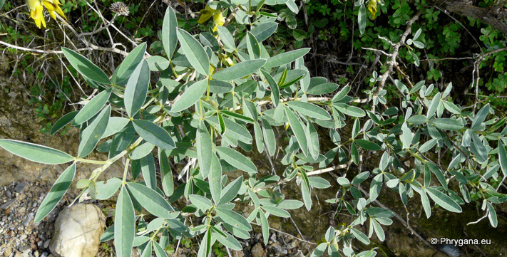

Anagyris foetida Kourtes (Zaros) 21 décembre 2010
| PHRYGANA | Fauna | Flora |
additions nouveautés |
espèces species |
contact -
info - commentaires phrygana1 (at) gmail.com |
| diversité crétoise -- Cretan diversity | |||||
| Anagyris foetida L. |
| 218 | Flora | FABACEAE | Anagyris |
Anagyris foetida Kourtes (Zaros) 21 décembre 2010 |
| Plante à tige poilue à poils appliqués. | |
| Feuilles: composées imparipennées ( 3 folioles de 30 à 70 mm). Folioles lancéolées-elliptiques, terminées par une courte pointe, vert blanchâtre, glabres sur le dessus, pubescentes sur la face inférieure; stipules soudées. | |
| Fleurs: en grappes courtes, pendantes; calice persistant, en forme de cloche, vert foncé devenant noirâtre, à 5 dents presque égales; fleurs jaunes à étendard taché de noir, pédonculées | |
| Fruit: une gousse longue de 10 - 18 cm, pendante, ondulée sur les bords; graines (3- 8) réniformes, violettes | |
| Hauteur: 100 - 400 cm | Type biologique: nanophanérophyte caducifolié |
| Floraison: décembre janvier février mars | |
| Altitudes: 0 - 600 m | |
| Statut en Crète: indigène - native | |
| Biotopes en Crète: garrigue, terrains vagues, olivaies, bords de chemins | |
| Distribution: région Méditerranéenne | |
| Note: espèce héliophile et thermophile, calciphile; dégage une forte odeur (désagréable?) au froissement; plante médicinale | |
|
Anagyris foetida Kourtes (Zaros) 21 décembre 2010 |
|
 Anagyris foetida Kourtes (Zaros) 21 décembre 2010 |
|
Anagyris foetida Kourtes (Zaros) 21 décembre 2010 |
|
Anagyris foetida Kamilari 21 décembre 2010 |
| 25 décembre 2010 |
| © paul fontaine -- © Phrygana.eu 2007 -- 2013 |